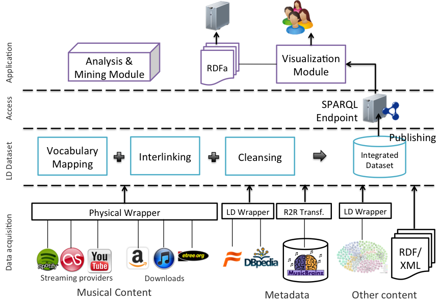

In this chapter we describe how a Linked Data application is built. This draws on what we have covered in the previous chapters. In chapters 2 and 3 we looked at different methods for consuming Linked Data. Chapter 2 focussed on how to use SPARQL queries to extract data from an RDF dataset. In chapter 3 we looked at other ways in which Linked Data can be made available in order to be consumed by an application. As well as providing a SPARQL endpoint, RDF data can be accessed by dereferencing HTTP URIs, parsing RFDa or reading an RDF dump. In chapter 4 we described ways in which Linked Data can be output for human consumption and the broad range of visualisation tools and techniques that can be used. In this chapter we describe how to bring all of these together in a Linked Data application. Once again we make use of the music application introduced in chapter 1 as our motivating scenario (see figure 1). This chapter looks at the overall composition of the Linked Data architecture and some of the frameworks that can be used when building a Linked Data application.

Figure 1: The Music Application Scenario.